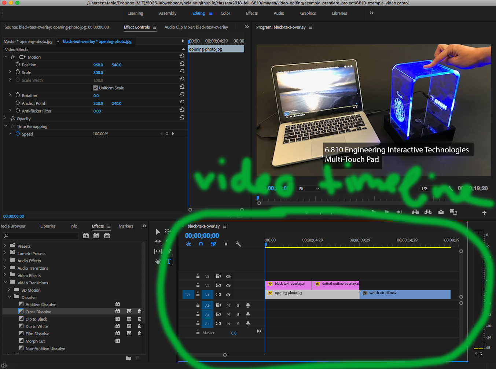
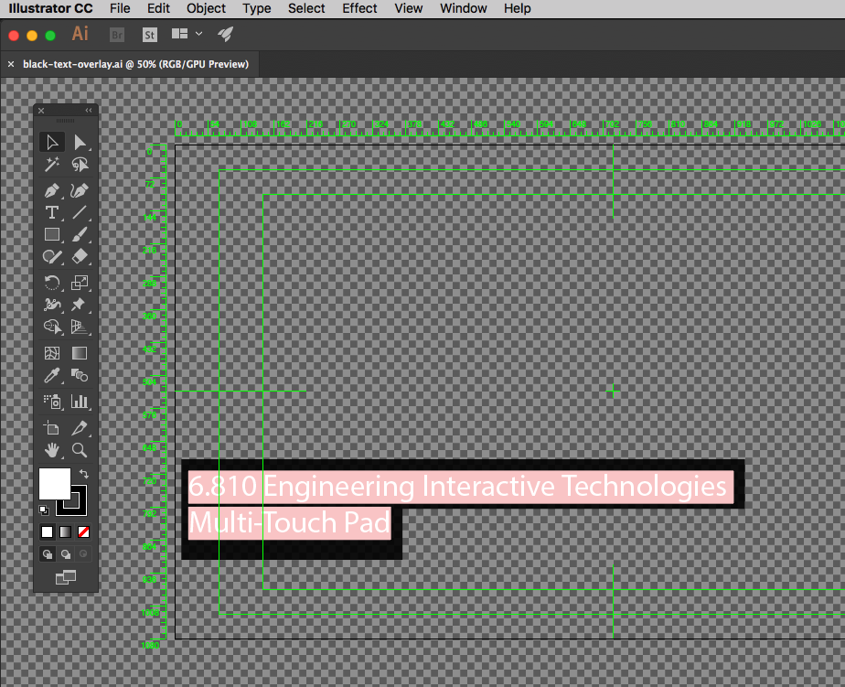

Today, we are going to show you how to take a short video of your multi-touch pad and edit it to look more professional. Since we don't have a lot of time left in the semester, we will keep this short.
Multi-Touch Pad Video
(due Friday, Nov. 20, 11.59pm)
Upload at short 2-3 sequence video of your multi-touch pad to your google drive into the folder 'multitouch-pad-visualization'.
The video should have:
a title screen that states what the video is (e.g., 'Multi-touch Pad') and who made it (i.e. your name)
2-3 sequences of video showing the multi-touch pad in action (shots are your choice, but the video needs to have a few cuts to show you know how to do video editing)
music is optional
length of video is up to you, it can be short (e.g. 15 seconds) or longer, whatever you prefer
Deadline: the deadline is not enforced, i.e. you can upload later, but you need to take the video material before you leave campus, i.e. Nov 20 is the last day to do this
Below you see an example from last year, where we used the old multi-touch pad based on FTIR technology. This is a very well done video and probably more than you have time for at the moment, so keep it simple if you have other things to do, no need to make it so fancy if you are stressed with other work.
Watch the video a few times, any effects you notice?
One for instance is that the video material is cut to the beat of the music, which gives is a really nice flow.
Below, we will give you the full description of how to make a professional video.
We recommend you follow all steps, but if you are short on time you can also skip through it and go right to the editing section.
(1) Draw a Video Storyboard (5-15 min)
Take a piece of paper and sketch out the scenes you are planning to shoot.
What do you want to show in which scene?
What would you label in the video sequence?
Which text will be on a black bar at the bottom?
For instance, if you want to go all fancy, you could make three sections:
hardware (show electrodes of multi-touch pad in close-up, show breadboard close-up, label components on board etc.)
show full touch-recognition pipeline: signal visualization, blob detection, gesture recognition (or 3D viz)
show that it works for one finger, two fingers etc.
Here is an early storyboard example that we started drawing before we created our touchpad video:
Storyboards do not necessarily have to be hand-drawn but it's typically the fastest.
Alternatively, video creators also create storyboards from rotoscopes or use photos directly (either from the internet or in your specific case where you already have the implemented touchpad ready, you could also snap photos from the prototype + take some screenshots from your Processing output on screen and use those in the storyboard).
(2) Animated Video Storyboard (Animatics)
An animatic is an animated storyboard to get a better feeling for the timing and length of the scenes in a video. Most often, it literally consists of all the images from the storyboard assembled into a video with each image being played for a different length. Sometimes voices and sound effects are already added since they contribute a lot to the mood of a video.
Due to time reasons we will not do this, but we wanted to let you know that this is used not only in hollywood movies but is also very standard for any type of product marketing video since it's much cheaper to produce than the actual video for testing if the video flow works and captures the audience.
Play both videos at the same time (the left is the animatics, the right the final video after production):
And sometimes these animatics are even made using cheap 3D animation (yes it was probably cheaper to do it this way than 'rent' this guy for a day).
Compare these
... or a mash up of 3D animation, pictures and other footage.
(3) Shoot Video
With your storyboard ready, you are now ready to shoot the video scenes.
Read the tips below before you get started.
Clean Background
Same as with the photos, use a clean backdrop and make sure there is no crap in the image that shouldn't be there.
Never Zoom
Yes, you can zoom to find a good image frame *before* you start recording, but *after* you hit the record button you should never ever zoom. Video material that uses zooming will immediately make you look unprofessional. The reason for this is that the very act of zooming has no equivalent in the human eye (our eyes cannot zoom in and out) and thus the material will always look unnatural.
Always use a tripod
Please always use a tripod, otherwise your video will be shaky.
Make sure the water balance is leveled.
We bought these tripods for class, they should fit all standard cell phones. Please use them! They are in the gray cabinet.
Shoot every scene multiple times
I always shoot every scene 3 times just in case something went wrong and I didn't notice. I also ideally slightly vary the action (e.g. come into the frame with the finger a little steeper or flatter so you have some choice of what you want to use in the end).
Keep the placement of sub-titles and labels in mind!
Keep in mind you may put subtitles in the lower half of the video later on.
If you planned to put labels somewhere, did you leave enough space in the frame? Planning is key here to avoid major frustration later on.
(4) Edit Video (use Adobe Premiere or ShotCut)
Because MIT offers the Adobe Suite for free, you should be able to use Adobe Premiere for video editing, which is what is also used in industry. Alternatively, you can also install Shotcut, a free open-source program, the instructions for how to use it are further down on this page.
After opening the Premiere Project file, you should see something like this:
Adding your Video Material
In the first step, drag some of your video material (or a photo) onto the video timeline here.

The video timeline has multiple 'tracks' (layers).
If you don't see your video material in the top window after you dragged it on the timeline, there is probably something else on top that covers it up.
Cutting Video Material
You can either just drag the end of a clip to make it shorter.
Or you can use the razor tool to cut a clip into two halfs (select the razor tool, then click onto the video clip in the location where you want to split it).
Adding Text, Outlines, etc.
You can drag almost any file type onto the timeline (e.g. .jpg files, .ai files from Illustrator).
I typically create my text in Illustrator, then drag the Illustrator file onto the timeline (if you do not have Illustrator, you can also use a different drawing program like inkscape or gimp).
This black-text-overlay.ai Illustrator file on the timeline (also in the example project folder) corresponds to the '6.810 Engineering Interactive Technologies - Multi-Touch Pad' text.
To edit it, I right-click onto the black-text-overlay.ai on the timeline and then click 'Edit Original', which opens the file in Illustrator.
In Illustrator I change the file, save it, and when I go back to Premiere it will update automatically (see below).

In the same way, you can add any type of drawing onto your video.
Here I drew a dotted white outline in Illustrator that highlights the touchpad and then overlaid it with the video file (see below).
Moving and Scaling Elements
If you are not happy with the placement of the text, you can also move it around in Premiere or scale it by going to 'Effects Controls' and then change the slider values under position and scale.
Changing the position of the black title bar:
And making it bigger:
You can do the same thing with any element in the video timeline, such as the photo of the touchpad.
Here I first double clicked the opening photo, then used scale to make the photo smaller and position to move it above the text.
Dip to Black, Cross-Dissolve and other Transitions
Transitions are really useful when you have a logical break, e.g. you show the blob detection and have multiple scenes about it, and then afterwards you show the gesture detection with multiple scenes. In-between these two steps it would be good to add a dip to black or other transition to show to the viewer that a new chapter starts.
To do this, click on 'Effects', then 'Video Transitions' and then drag e.g. the Dip to Black' between two video-snippets on the timeline.
Which should give you something like this:
Shotcut
If you do not yet have Shotcut, you can download it here.
To get started with Shotcut you should know two things. When you first open the software, you will notice that the window is split into a few regions. On the left there is column interface. Choose the playlist tab to view, add, or remove media files from the project.
The bottom region is used to organize and stitch media together in tracks. Here you can start a track by clicking on the icon below 'Timeline':
and then selecting if you want to add an audio or a video track.
Once you have a track just drag and drop files from your playlist into the track you want.
Cutting Video Material
You can either just drag the end of a clip to make it shorter.
Or you can use the 'Split at Playhead' tool to cut a clip into two halfs (move the playhead at the location you want to cut, then click on the tool).
Adding Text, Outlines, etc.
Shotcut allows you to add various effects to your media. This includes text, fading in and out, etc. Here is a basic video about various filters.
Other helpful information
If you drag one clip into another clip on the same track, they will automatically fade together.
You can use the 's' key to automatically split a clip.
All clips you add to a track can also be shortened by dragging handles at the beginning or end of the track
You can have multiple video tracks to create interesting effects like videos within videos, or videos in static images.
You can adjust the speed of a clip by selecting the clip and selecting the "Properties" button at the top menu bar. There should be a settable "speed parameter.
You can export videos by navigating "File->Export Video..." There are several options. I selected "H.264 High Profile" and pressed the "Export File" button.
(5) Add Music
Videos are often more fun with music.
Websites, such as Jamendo.com, provide many free sound files as long as you distribute your own work under creative commons license as well.
Otherwise you might have to pay, depending on the platform you use.
Here are some final project videos from 6.810 students from the last years (they had a different project). Please make sure you leave some time when you returned home to also make a short project video.
Multi-Touch Pad Video
(due Friday, Nov. 20, 11.59pm)
Upload at short 2-3 sequence video of your multi-touch pad to your google drive into the folder 'multitouch-pad-visualization'.
The video should have:
a title screen that states what the video is (e.g., 'Multi-touch Pad') and who made it (i.e. your name)
2-3 sequences of video showing the multi-touch pad in action (shots are your choice, but the video needs to have a few cuts to show you know how to do video editing)
music is optional
length of video is up to you, it can be short (e.g. 15 seconds) or longer, whatever you prefer
Deadline: the deadline is not enforced, i.e. you can upload later, but you need to take the video material before you leave campus, i.e. Nov 20 is the last day to do this